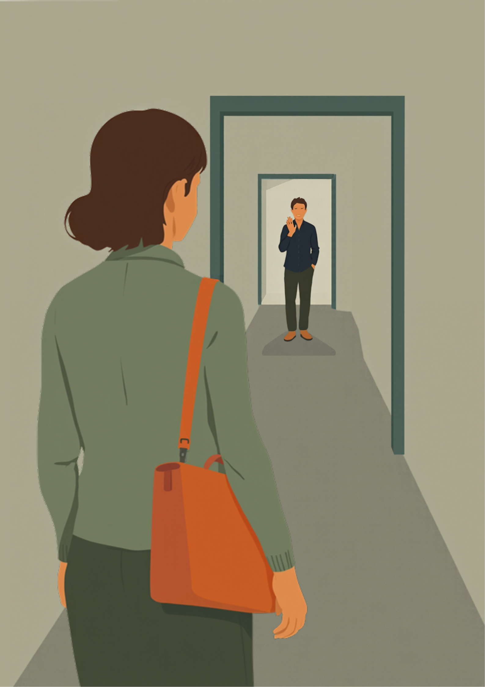
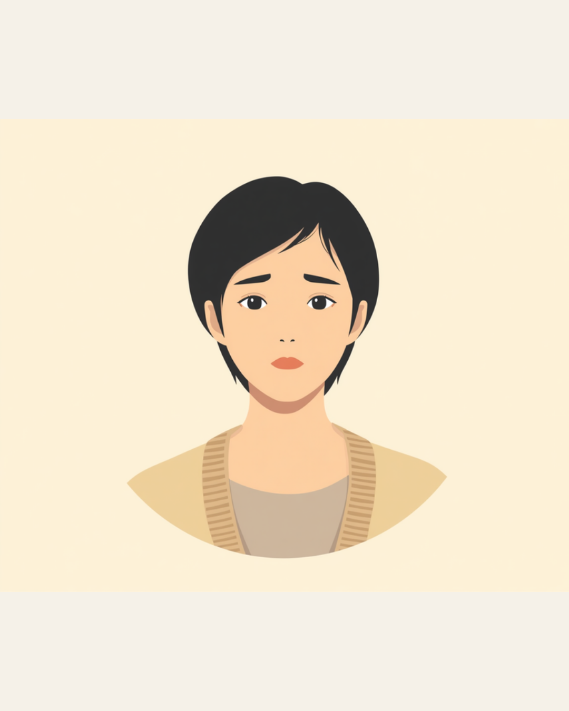
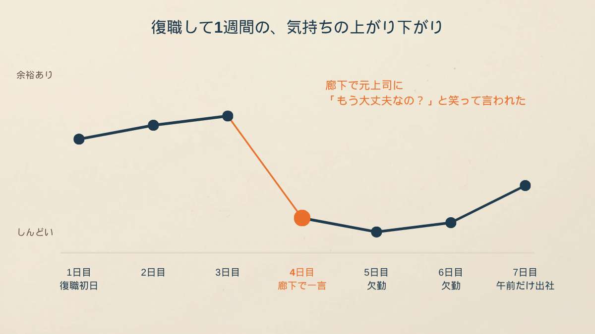
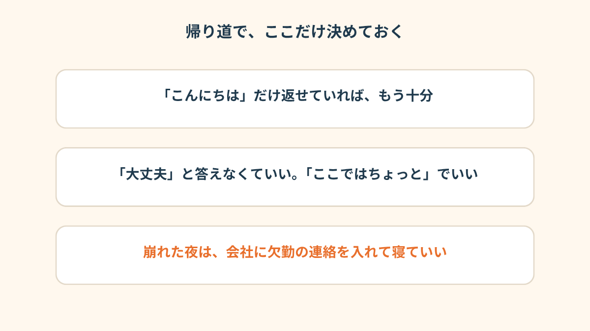

復職して4日目の夕方、廊下の向こうから、休職前にいた部署の上司が笑いながら言ってきました。
私は「あ、はい、おかげさまで」と返して、普通に席に戻って、普通に定時で帰った。
崩れたのは、その翌朝です。

復職4日目、廊下で笑いながら言われた
適応障害で2ヶ月休んで、4月から戻りました。
戻った先は、休職前とは別の部署です。
今の上司は「無理せずゆっくりやっていきましょう」と言ってくれる人で、同僚も、こっちから何も言わなくても、さりげなく仕事を回してくれていた。
だから、正直ちょっと調子に乗ってました。
1日目は緊張で、2日目もまだ気が張ってて、3日目に「あれ、意外といけるかも」って思った。
その気負いが、いちばんよくなかったと、あとから思います。
4日目の夕方、コピーを取りに行く途中でした。
休職前の部署のフロアの端を通らないと行けない場所があって、そこで、前の上司とばったり。
「お、戻ってきたんだ。もう大丈夫なの？」
笑ってました。
嫌味っぽい感じじゃなくて、むしろ明るかった。
だからこそ、何も返せなかった。
「大丈夫なの？」より、「みんなで回してた」のほうが残った
そのあと、続きがあったんです。
「あの頃はほんと大変だったよね、みんなで回してたからさ」
これが、家に帰る電車の中でずっと頭の中で再生されてました。
「大丈夫なの？」は、まだ、ただの挨拶として流せる。
でも「みんなで回してた」は、私が抜けた分を誰かが背負っていた、という話で、それを、笑顔で、本人に言うんだって。
その日は、ちゃんと夕飯も食べたんです。
お風呂にも入って、普通に寝た。
崩れるのは、だいたいそのあとです。
「戻って3日目くらいに、前の部署の人に『あれ、もう来れるようになったんだ』って言われたんですよ。悪気ないのは分かってる。でもその日の夜、布団の中で何回もそのセリフ再生して、朝になったら体が動かなかった。2日休んで、自分でもびっくりしました。元気になったつもりだったのに、って」


欠勤の連絡を、チャットで打つまでに40分かかった
5日目の朝、目は覚めてました。
ただ、体が布団から出ない。
時計を見たら6時50分で、始業は9時。
連絡を入れなきゃ、って頭では分かってる。
でも、復職したばかりの人間が、5日目に休むんだっていう事実が、重くて。
結局、チャットで「体調が優れないので、本日お休みをいただきたいです」と打ち終わったのが、7時半すぎでした。
文面は3回書き直して、最後は敬語が合ってるかまで気になってた。
送ってから、10分くらい、スマホを伏せて天井を見てた。
「2日休んで3日目、また朝が来たときに、もう行けないと思いました。もう一回休みの連絡を入れたら、さすがに呆れられるんじゃないかって。結局もう1日休んで、その間ずっと『復職、やっぱり早かったんだ』って考えてた。あとで主治医に話したら、『数日休んだだけで判断しなくていい』って言われたんですけど、そのときは全然そう思えなかったです」
「ゆっくりでいいですよ」が、いちばん効いた日
欠勤の連絡のあと、今の上司から、すぐに返信が来ました。
「了解です。無理せず、ゆっくり休んでください。戻れるときに戻ってきてください」
これを読んで、私はなぜか、余計に泣きました。
優しくされると、申し訳なさが追いついてくる。
休職前の部署の人に「みんなで回してた」って言われたのが、そのまま今の職場にも重なって、また誰かに背負わせてるって思った。
2日休んで、3日目は、午前だけ出社しました。
席に座ったら、隣の先輩が「おかえり」って言ってくれて、それだけでまた少し泣きそうになった。
あとで見た職場の人たちは、拍子抜けするくらい、何も変わってなかったです。
復職から1週間。
あの廊下の一言は、いまだに思い出すと胃のあたりが重くなるけど、
「2ヶ月休んで戻ってきたばかりの人が、4日目で全力で動けるほうがおかしい」って、あとから主治医に言われたときは、ちょっとだけ息がしやすくなりました。

この記事に、聞いてみたいことはありますか？
「自分の場合はどうなんだろう」と思ったことを、気軽に書いてみてください。いただいた質問は個別にお返事したうえで、匿名で記事にすることがあります。